Published: August 16, 2022
Metacast: Multi-View 3D Human Reconstruction
Attention PiFU: Multi-View 3D Reconstruction of Crowded Multi-Person Interactions
3D Human Reconstruction
Multi-view
Multi-person
A technical research I led at Unity. For technical details, please see our paper.
Objective
To design and implement a robust deep learning framework for 3D dynamic scene reconstruction,
leveraging multi-view camera systems, to model complex human interactions in densely populated
environments.
Dataset
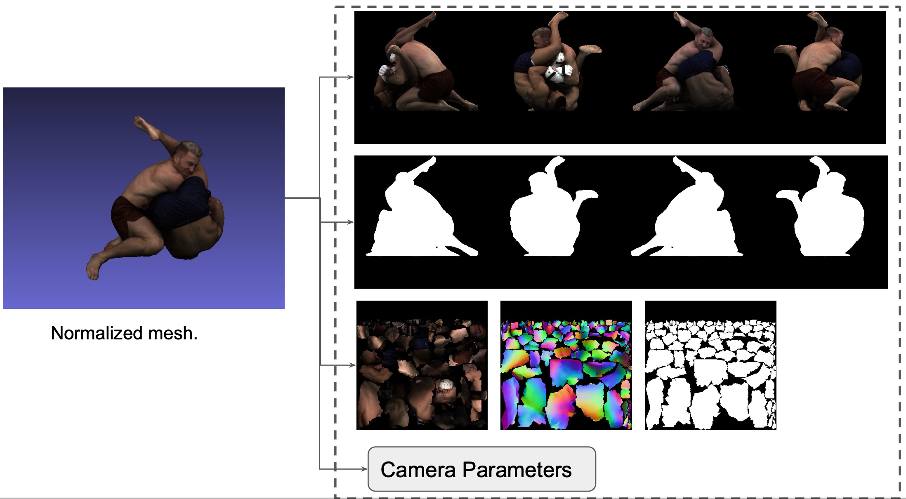
Figure: An example of the inputs at training.
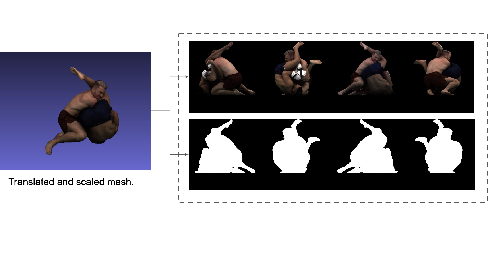
Figure: An example of the inputs at testing.
UFC Dataset
Internally captured with two professional UFC athletes. All 2D views are generated with
orthogonal projection.
train set: 3600 scenes in 3D mesh
valid set: 600 scenes in 3D mesh
At training, every 3D scene is decomposed into
\(k \) 2D
RGB views, \(k \) 2D binary masks, a texture map, and a normal map. All of them are forwarded to
the model.
At testing, every 3D scene is decomposed into
\(k \) 2D
RGB views, and \(k \) 2D binary masks. Only RGB views and masks are forwarded to the model.
Result Demonstration
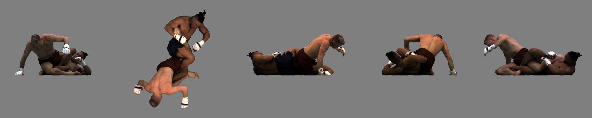
Figure: Multi-view RGB images as input
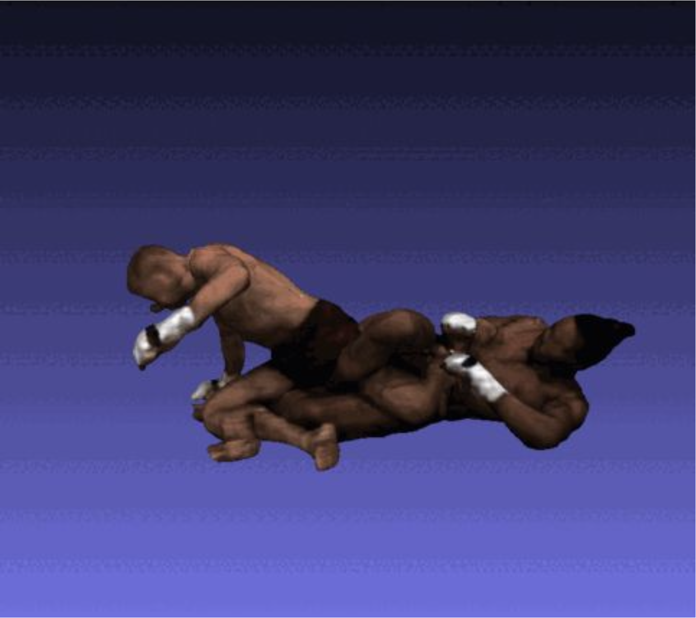
Figure: A 3D mesh as output
Prediction on a unseen scene
Input: \(k \) (\(k \)=5) RGB images + \(k \) (\(k \)=5) binary masks
Output: a 3D mesh
Inference time: 50 seconds on a single Nvidia T4 GPU
Method
The following diagrams illustrate the geometry branch of our model.
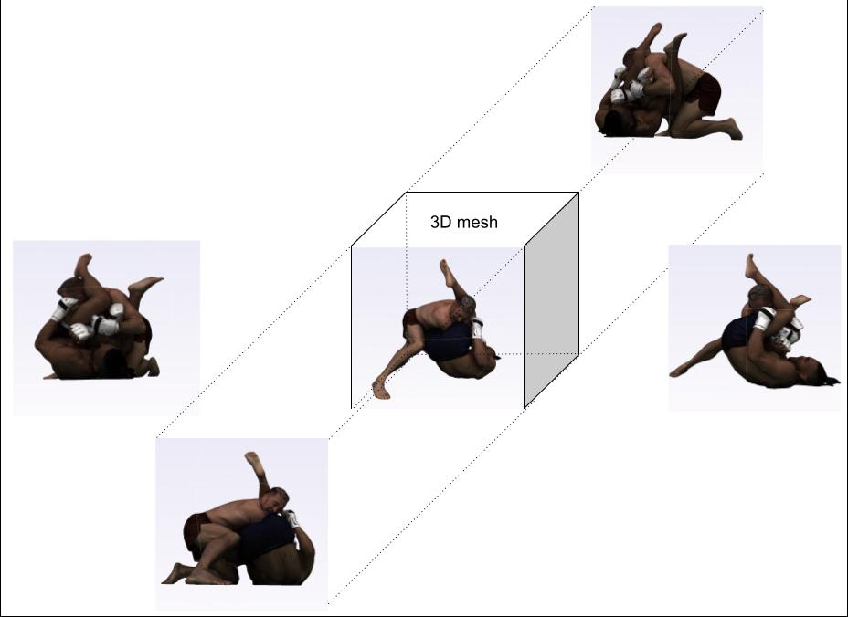
Step 1: Project an input 3D mesh to four 2D-planes
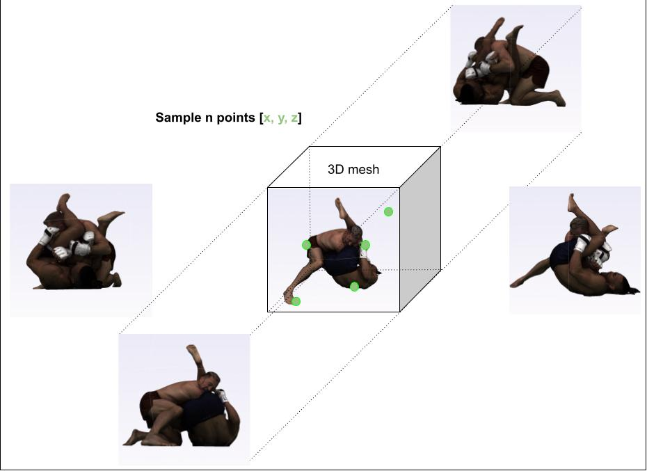
Step 2: Sample n points around the 3D mesh surface and the
space
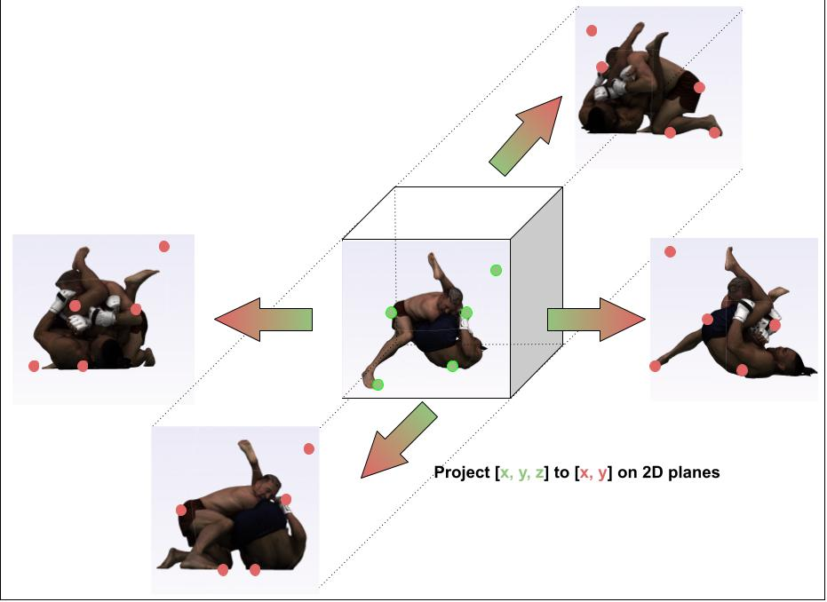
Step 3: Orthogonally project 3D sampled points to each view
image
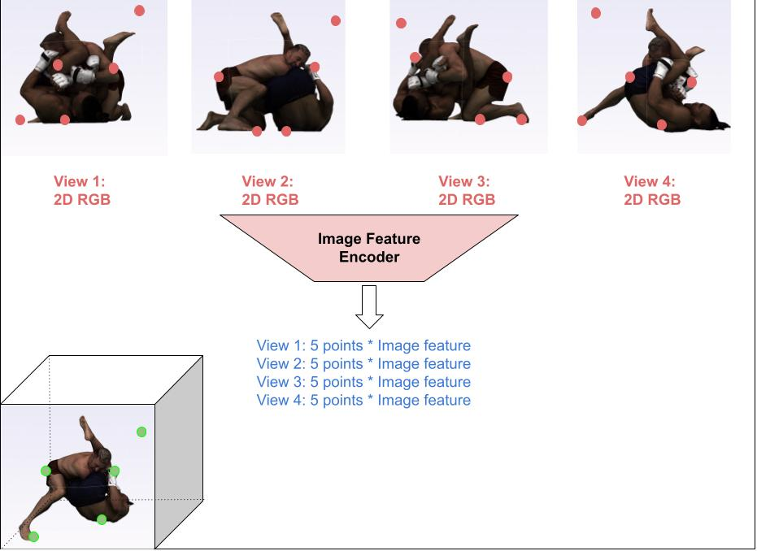
Step 4: Obtain each projected 2D pixel’s image features from
Image Feature Encoder.
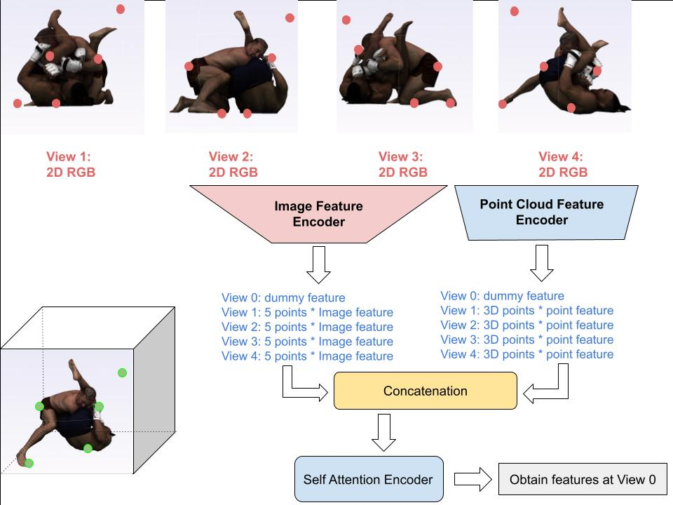
Step 5: Introduce a dummy feature
(token) to each feature encoder, leverage a self-attention encoder to
encode the fused image and
point cloud features.
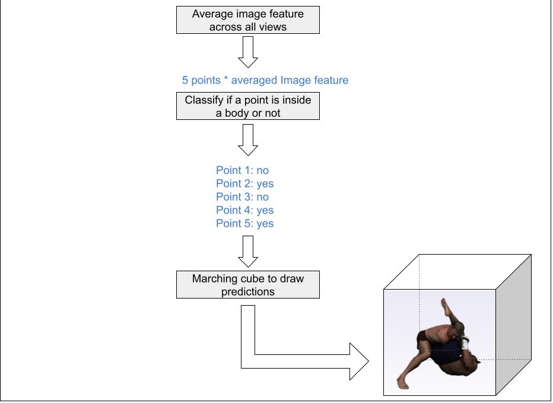
Step 6: Averaged features are fed into a classifier to
classify if each point is inside/outside the 3D mesh.
Experiments
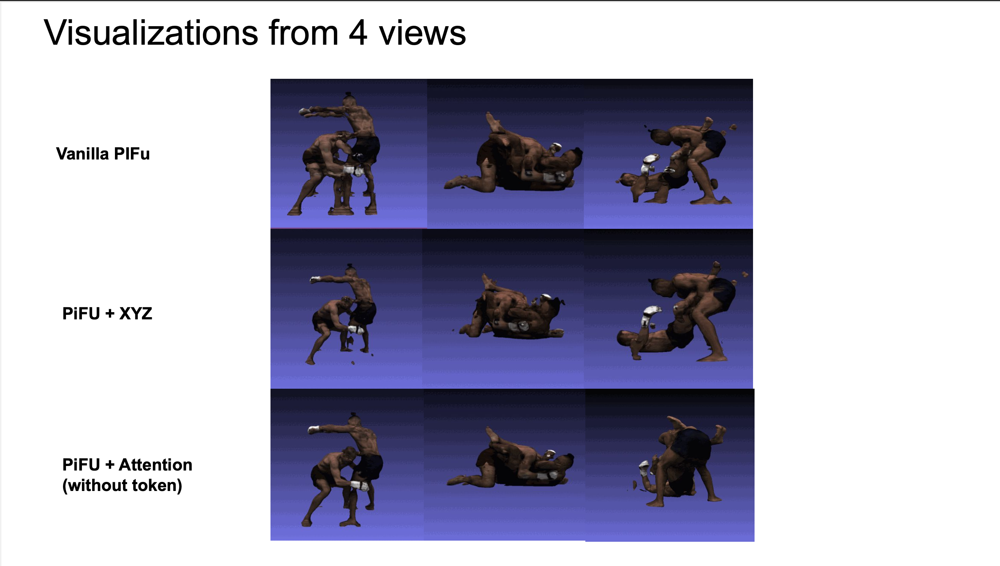
Fig: Test results when 4 views are input to each model
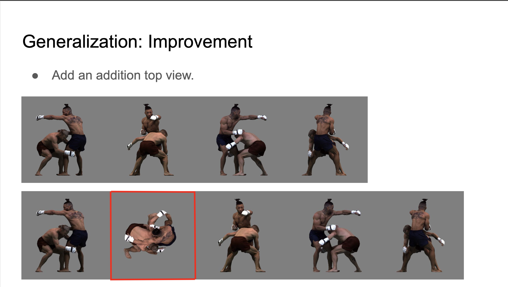
Fig: Add one more view to the model during training and
testing
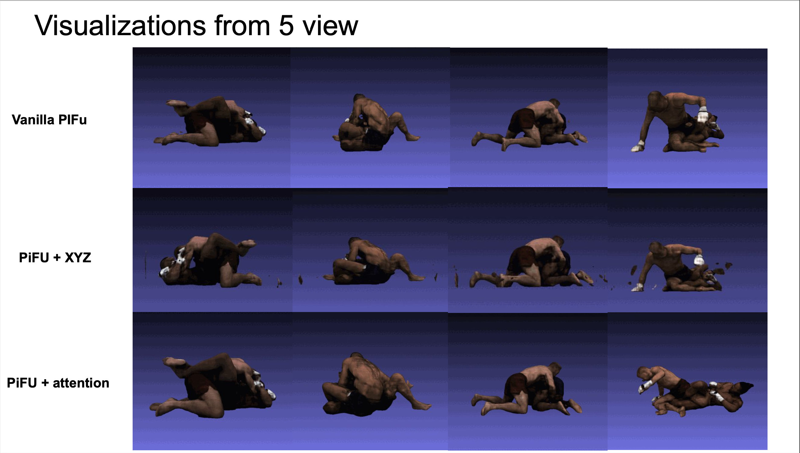
Test results when 5 views are input to each model
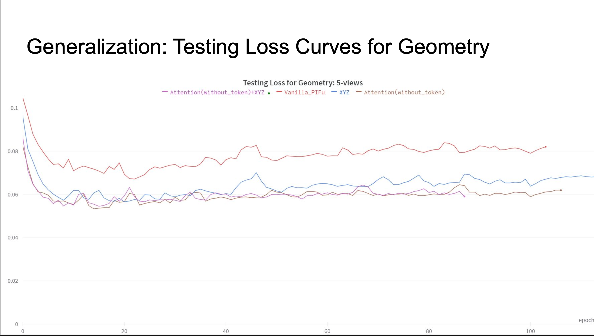
Test losses when 5 views are input to each model
Back to Research